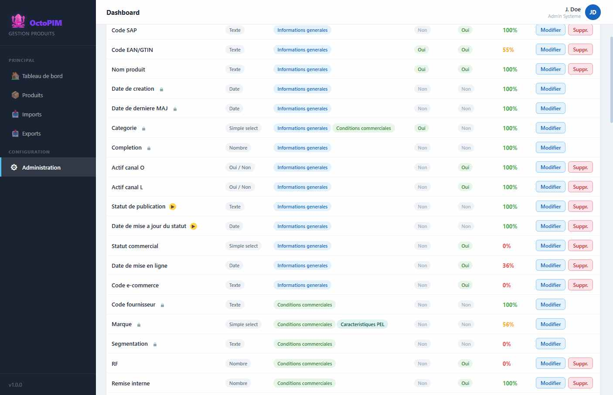

Modele de donnees
Vue d’ensemble fonctionnelle : quelles notions existent et comment elles se relient. Les catalogues detailles sont sur les pages Attributs, Groupes et Categories. Le stockage technique (API, tables) viendra quand le choix d’architecture sera tranche.
7Notions coeur
N-NAttribut ↔ Groupe
N-NCategorie ↔ Groupe
1-NCategorie → Produits
Schema d’ensemble
Diagramme Mermaid (macro Confluence)
flowchart TB Cat[Categorie] -->|1-N| Prod[Produit] Cat -->|N-N| Grp[Groupe d'attributs] Grp -->|N-N| Attr[Attribut] Prod --> Val[Valeurs de la fiche] Prod --> Hist[Historique] Prod --> CC[Condition commerciale] Role[Role] --> Prod
Cardinalites (lecture metier)
| De | Vers | Card. | Sens |
|---|---|---|---|
| Categorie | Produit | 1-N | Un produit a une famille. |
| Categorie | Groupe | N-N | Les groupes rattaches = onglets de la fiche. |
| Groupe | Attribut | N-N | Un attribut peut apparaitre dans plusieurs onglets. |
| Produit | Valeurs | 1-N | Une valeur par attribut renseigne. |
| Marque + fournisseur + categorie + segmentation | Condition commerciale | 1-1 | Un accord, une ligne. |
| Role | Droits | 1-N | Menus, categories, modules. |
| Produit | Historique | 1-N | Journal a l’enregistrement. |
Ou ça se voit


A completer
Diagramme API / tables quand le stockage sera choisi. Unicite EAN,
cycle de vie referentiel. Visuels : Babil. Identites : Okta.